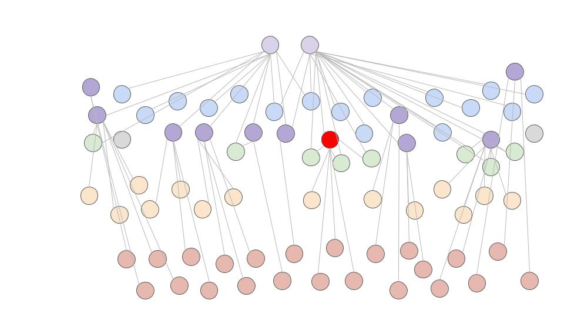
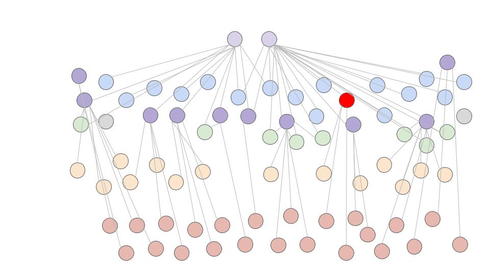
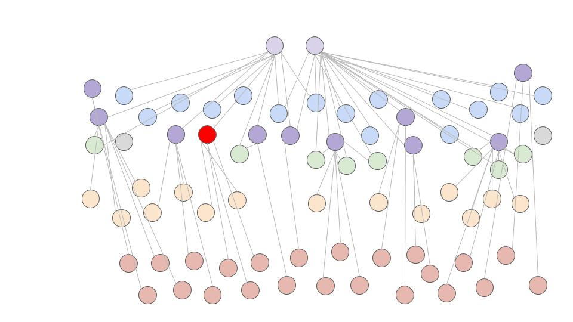
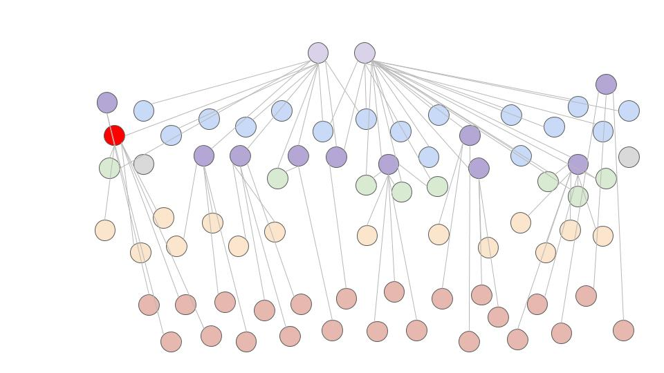
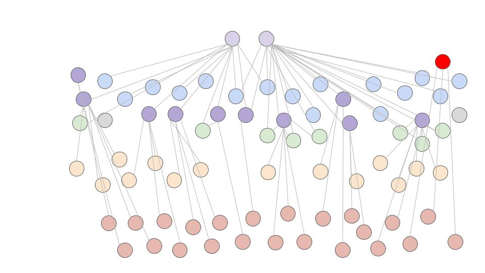
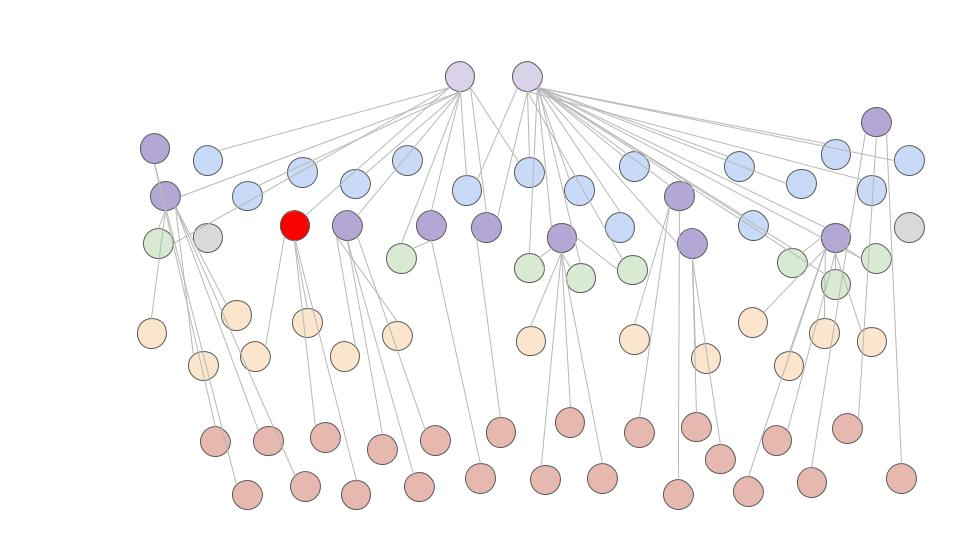
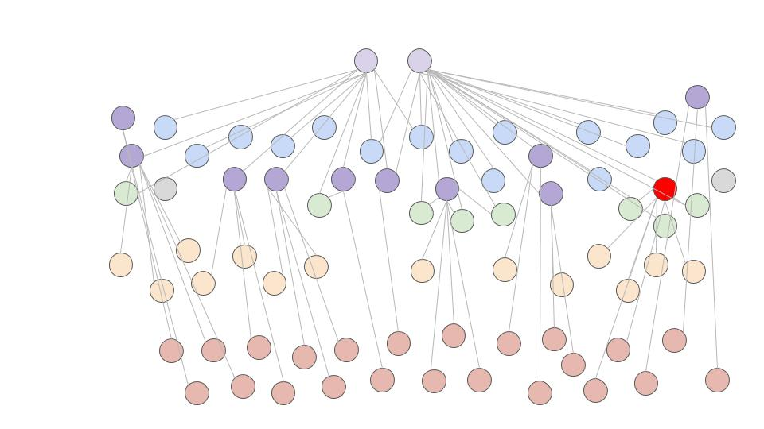

Open Science:
Lessons from Open Source
EuroSciPy 2016 | Erlangen, Germany
import abbycabs
abbycabs.hello()
I work for the Mozilla Foundation where I'm
Lead Developer, Open Source Engagement
I live and work in Toronto, Canada
abbycabs.history()
Lead Developer, Mozilla Science Lab,
Mozilla Foundation
Lead Developer, WormBase,
Ontario Institute for Cancer Research
Bioinformatic Research Specialist, Michigan State University

Our mission is to ensure the Internet is a global public resource, open and accessible to all.

Making research collaborative, accessible, and usable.
OPEN SCIENCE
How did the 'Open' movement start?
“Philosophical Transactions of the Royal Society”
Established by the Royal Society of London in 1665

“We must be very careful as well of regist’ring the person and time of any new matter, as the matter itselfe”
24 November 1664
“…all ingenious men will thereby be incouraged to impact their knowledge and discoverys ”
3 December 1664
“ … being first revised by some of the members.”
Royal Society of London, Council Minutes, 1 March 1665
Credit, Documentation, Sharing & Participation
Science embraced a culture of working together and sharing discoveries to further human knowledge.
What do these practices look like in the digital age?
The academic principles of sharing knowledge inspires
the rise of free software in the 80s and 90s.
“Linus Torvalds’s style of development—release early and often, delegate everything you can, be open to the point of promiscuity—came as a surprise. No quiet, reverent cathedral-building here—rather, the Linux community seemed to resemble a great babbling bazaar of differing agendas and approaches... out of which a coherent and stable system could seemingly emerge…”
In 1998, the Netscape Corporation released the Netscape browser suite as free software.
This became the basis of the Mozilla Project and inspired the term open source.
 https://blog.mozilla.org/beyond-the-code/2012/06/19/two-things-weve-proved-along-the-way/
https://blog.mozilla.org/beyond-the-code/2012/06/19/two-things-weve-proved-along-the-way/
Credit & Documentation
Version control software: more granular attribution & documentation
Sharing
Free software movement & the web: software and data is available immediately and globally
Participation
Open source: radical participation where outsiders can become insiders
Working Open
Public and participatory. This requires structuring efforts so that "outsiders" can meaningfully participate and become "insiders" as appropriate.
Working Open, Mozilla WikiHow do outsiders become insiders today?
Think of a place you felt welcome the first time you visited
What made it welcoming?
What does this look like in software?
Open Source Checklist
- Public repository
- Open license
- README
- Roadmap (issue tracker with tasks broken down in issues)
- Code of Conduct
- CONTRIBUTING.md
- Mentorship
What else can we apply Working Open to?
SCIENCE!
OPEN SCIENCE
Fueling the Open Science movement with best practices from Working Open
How do you (help)
build a movement?
Project based, hands-on experiential learning
Working Open Workshop
Best practices Working Open
Open Leadership Cohort
Support applying Working Open to your project or group
- 1:1 mentorship over three months
- 30min meetings every two weeks
Global Sprint
Two-day sprint around the globe to hack on open science and open data projects
We are fueling the Open Science movement with best practices from Working Open
Open Source Checklist
- Public repository - Achintya
- Open license - Rob
- README - Kirstie
- Roadmap - Bastian
- Code of Conduct - Richard
- CONTRIBUTING.md - Tim
- Mentorship - Madeleine
Public Repository

Public Repository
Make sure your code is available
Open License

Open License
Mozilla Science Lab recommends MIT or BSD
README

README
- Open Project Communication
- Open Canvas
- Example: p5.js

Roadmap

Roadmap
Minimum: an issue tracker with tasks broken down in issues.
Can be: Comprehensive wiki outlining future of the project.
- Intro to Roadmapping
- GitHub guides on Mastering Issues and Milestones
- Example: PaperBadger Roadmap
Code of Conduct

Code of Conduct
CONTRIBUTING.md

CONTRIBUTING.md
Mentorship

Mentorship
mozillafestival.org
"MozFest is designed to be like the web: a place where you can make things that matter." -Sam
Acknowledgements
Achintya Rao, Alan Mooiman, Ali Swanson, Amel Ghouila, Anelda van der Walt, Anna Krystalli , Arliss Collins, Aurelia Moser, Bastian Greshake, Brian Bot, Christopher De Cairos, Christopher Kittel, Demitri Muna, Fatma Guerfali, Harry Smith, Hugo Day, Igor Babuschkin, Joey Lee, Jon Tennant, Kaitlin Thaney, Kirstie Whitaker, Luke Johnston, Madeleine Bonsma, Natalie Worth, Oliver Sauter, Patricia Herterich, Peter Grabitz, Pomax Kamermans, Richard Smith-Unna, Robert Sullivan , Stephanie Wright, Tim Head, Zannah Marsh